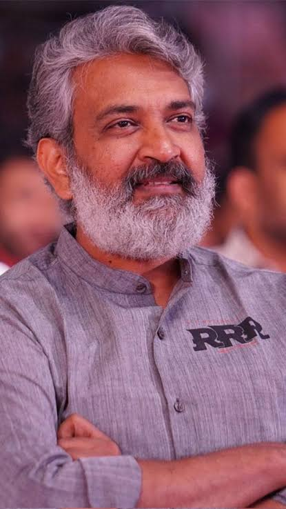
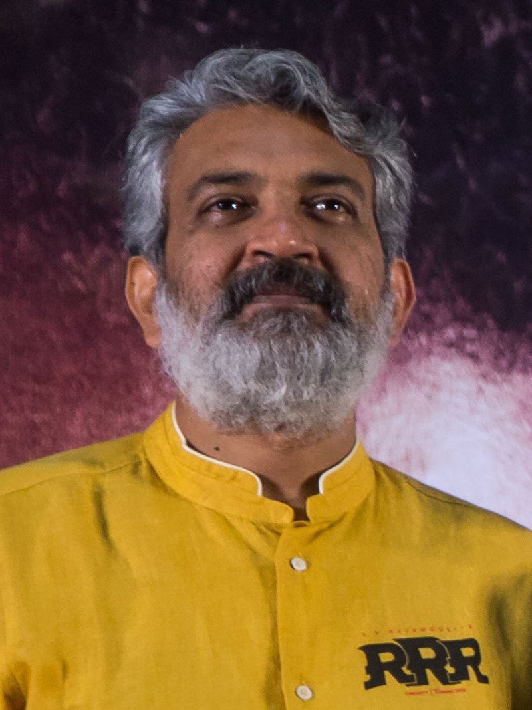

Favorite Director

S. S. Rajamouli
Personal Details
Born :
10 October 1973 (age 50)
Place of Birth:
Hire Kotnekal, Mysore state, IndiaVijayawada, Andhra Pradesh, India
Occupations:
Film director ,screenwriter
Works:
Filmography,cinematic style
Spouse: Rama Rajamouli
Early Life And Backround

Koduri Srisaila Sri Rajamouli was born on 10 October 1973 in a Telugu family to V. Vijayendra Prasad and Raja Nandini. His parents met in Vizag and later had an inter-caste love marriage. They were staying in Hire Kotnekal in Raichur district of Mysore state (present-day Karnataka) at the time of his birth. Both his parents hail from Andhra Pradesh — his father from Kovvur near Rajahmundry and his mother from Visakhapatnam.
Rajamouli's parents are ardent devotees of Lord Shiva. He was born after his mother had a dream when she visited the pilgrimage site of Srisailam. Hence, he was named Srisaila Sri Rajamouli. He has one elder sister who now lives in Australia. Rajamouli grew up in a joint family — his father and his five brothers lived in the same house with their families. Prasad's family had lands in Kovvur, which were lost when the railways lines were laid through them. Then, Prasad and his family moved to Karnataka from Kovvur in 1968. Prasad, along with his elder brother K. V. Sivashankar, bought seven acres of paddy fields in Hirekotikal village near Manvi in Raichur district. Their family moved back to Kovvur in 1977.
Rajamouli was educated in Kovvur till fourth standard and then shifted to Eluru where he studied till Intermediate first year. He then took a break of two years and finished his Intermediate second year in Kovvur. After that, he did not pursue any further formal education.
Rajamouli was passionate about storytelling right from his second standard. When he was seven years old, his grandmother introduced him to the epics Ramayana, Mahabharata, and Bhagavata. At the same age, his father introduced him to Amar Chitra Katha comics that featured stories on Indian historical figures, religious legends and folktales. It had a huge impact on him and developed his penchant for larger-than-life characters. He would remember those stories and the films he watched and then re-tell them to his friends in his own way. His mother was keen on him learning English and would take him to watch English-language films in the nearby towns. She encouraged him to read comics and storybooks in his free time and never pressured him in academics. His father recollecting about Rajamouli's childhood noted, "he was not an ambitious child. For a long time, we did not know what interested him. He showed some inclination towards films. He played the role of young Krishna in a film I directed."
Rajamouli's paternal grandfather was a wealthy landlord who owned 360 acres of land. By the time Rajamouli was 10 or 11 years old, they lost much of their wealth. As his father Vijayendra Prasad and uncle Siva Shakthi Datta were passionate about filmmaking, they sold most of their remaining assets and shifted to Madras to make films. They started many films that went unfinished. They faced financial losses and started working as ghostwriters to make ends meet. Thirteen members of his extended family started living in a two-room apartment in Madras. Rajamouli recollects his family sitting together and making fun of themselves and their condition at the time, but they were never sad about it.
Later Prasad established himself as a screenwriter with films like Bobbili Simham (1994) and Gharana Bullodu (1995). Wanting to make another film, his father then co-produced (along with Katragadda Prasad) and directed a film called Ardhangi (1996) with his life savings.
Career
Rajamouli started his film career as an apprentice to the veteran film editor Kotagiri Venkateswara Rao and worked with him for six months. Rajamouli recollects, "Even in my early 20s, I didn't know how to plan for my future. My father would constantly scold me for doing nothing. I joined films just to get away from his nagging. Slowly, I found my love for direction." He worked at AVM recording theatre in Chennai for a few days. He also worked as an assistant director to Kranthi Kumar for some time. Then, he assisted his father Vijayendra Prasad for six years. He started writing for films but was always disappointed by the execution of his stories by other directors. His frustration as a writer motivated him to become a director so that he can bring out his vision as a writer perfectly onto the screen.
He then shifted to Hyderabad from Chennai and worked with his relative, Gunnam Gangaraju, from whom he learnt about the practical aspect of filmmaking. Later under the supervision of K. Raghavendra Rao, he directed social message-oriented commercials. He also directed a few advertisements for the Telugu Desam Party. He then worked for one and a half years as the director of the Telugu TV serial, Santhi Nivasam, along with Vara Mullapudi, which was produced by Raghavendra Rao. It aired on ETV. In an interview in 2005, Rajamouli called it the most arduous period in his life as he used to work for 17 hours a day.